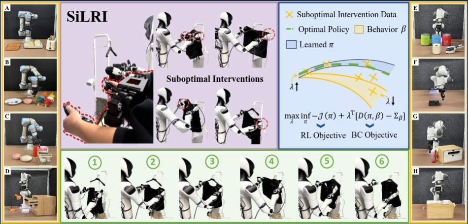

Real-world reinforcement learning (RL) offers a promising approach to training robotic manipulation policies through online interaction. While recent methods leverage human interventions to accelerate learning, they often assume interventions are consistently optimal or rely on offline filtering mechanisms that may discard valuable exploratory data. In practice, human operators exhibit varying performance across different states: operators may provide near-optimal guidance in familiar situations but struggle in novel or ambiguous states. The key challenge is how to selectively leverage heterogeneous intervention quality across states while maintaining the benefits of online exploration. To address this, we propose SiLRI, a state-wise Lagrangian RL algorithm that adaptively trades off between imitating interventions and maximizing future returns. We formulate online learning as a constrained optimization problem where constraint bounds vary across states according to estimated intervention uncertainty. This problem is then solved via state-wise Lagrangian relaxation, enabling the policy to selectively imitate interventions in high-confidence regions while relying more on RL exploration elsewhere. We evaluate SiLRI on nine real-world manipulation tasks using a human-as-copilot teleoperation system. Compared to HIL-SERL that treats interventions equally, SiLRI achieves at least 50% faster learning, effectively exploiting suboptimal human interventions without being constrained by them.

SiLRI Enables Effective Real-world RL from Suboptimal Interventions. Seamless human intervention is provided via a teleoperation system, though interventions can be suboptimal (e.g., inconsistent actions in the same state; purple). SiLRI uses state-wise Lagrange multipliers to adaptively balance the RL and BC objectives (blue), enabling efficient online training on a dual-arm humanoid robot (green) and two other embodiments (yellow, A-H), with training time from 0.5 to 2.5 hours.
The following videos showcase our experimental process, including the setup of robustness experiments and the performance on a dual-arm robot. Furthermore, to demonstrate the online training process of SiLRI, we provide a complete, continuous one-shot video.
We introduce external disturbances to examine the robustness and failure recovery ability in four tasks.
Close Trashbin
Push-T
Hang Chinese Knot
Insert USB
For the dual-arm manipulation task, we compare SiLRI with HG-Dagger. We used three cameras (a top-mounted head camera and two wrist cameras) and a humanoid-style gripper, and the action space is a 12-DoF end-effector pose increment and discrete gripper commands per timestep.
Comparing the SiLRI Failure Case and the HG-Dagger Failure Case, although both ultimately failed to complete the task, SiLRI continuously adjusted the robot hands to follow the motion of the hanger until it eventually timed out. HG-Dagger is more inclined to always follow the human demonstration during the training process rather than exploring the environment.
The following illustrates the online training process for SiLRI from scratch. In the Close Trashbin Task, the system becomes capable of autonomously closing the trash bin in approximately 30 minutes. Human-in-the-loop is realized through a bilateral teleoperation system.
In this work, we propose a state-wise Lagrangian reinforcement learning (RL) algorithm from suboptimal interventions, for real-world robot manipulation training. Observing the fact that human operators have different confidence level and manipulation skill over different states, a state-dependent constraint is added to the RL objective to automatically adjust the distance between human policy and learned policy. Building on a human-as-copilot teleoperation system, we evaluate our method with other SOTA online RL and imitation learning methods on 9 manipulation tasks on 3 embodiments. Experimental results show the efficiency of SiLRI to utilize the suboptimal interventions at the beginning of training and converge to a high success rate at the end. Other ablation studies and investigation experiments also conducted to learn the advantage of SiLRI.